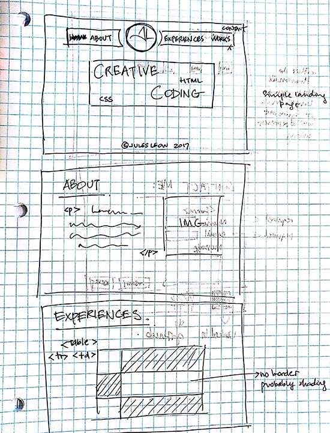
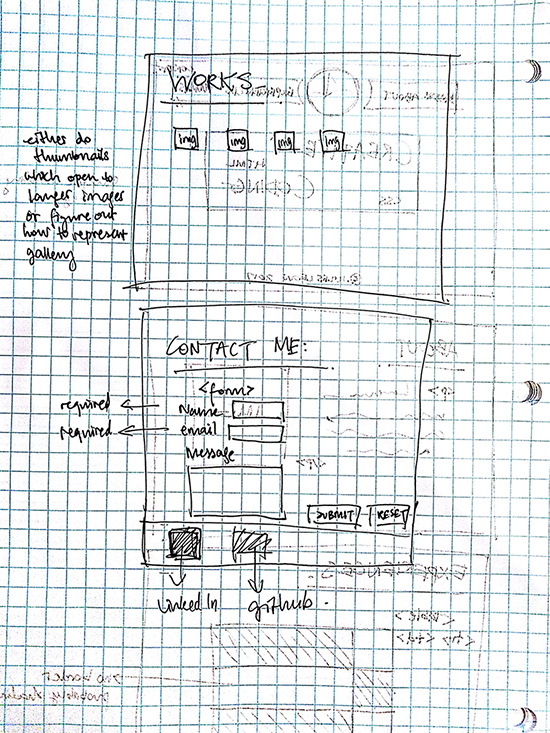
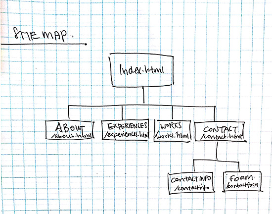

Here are the wireframes for my final project pages. I do apologize for them not looking as good and as detailed as I'd like them to be. I ran out of time for this page.


Here is a simple site map for my site.
